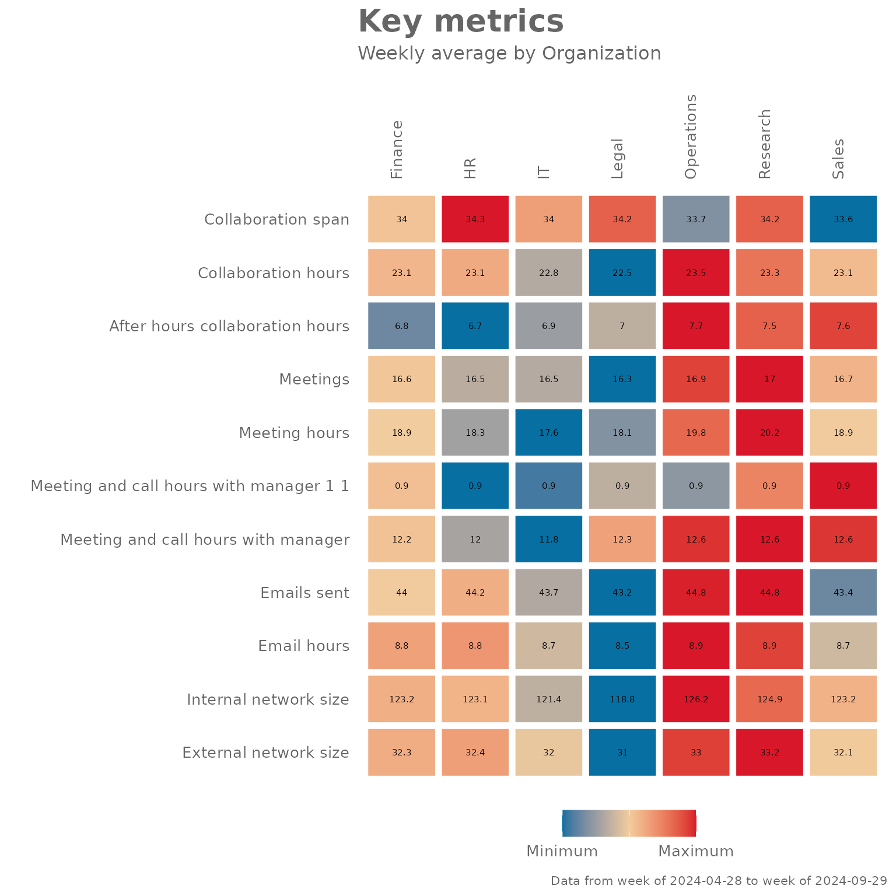

Introduction to {vivainsights}
Martin Chan
2025-05-12
Source:vignettes/intro-to-vivainsights.Rmd
intro-to-vivainsights.RmdBackground
This document walks through the vivainsights package, and provides some examples on how to use some of the functions. For our full online documentation for the package, please visit https://microsoft.github.io/vivainsights/. For anything else related to Viva Insights, please visit https://learn.microsoft.com/en-us/viva/insights/.
Setting up
To start off using vivainsights, you’ll have to load
it by running library(vivainsights). For the purpose of our
examples, let’s also load dplyr as a component package
of tidyverse (alternatively, you can just run
library(tidyverse)):
The package ships with a standard Person query dataset
pq_data:
data("pq_data") # Person Query data
# Check what the first ten columns look like
pq_data %>%
.[,1:10] %>%
glimpse()
#> Rows: 6,900
#> Columns: 10
#> $ PersonId <chr> "7d99f98f-c0a6-4df9-b2c3-ec9507caf781",…
#> $ MetricDate <date> 2024-04-28, 2024-04-28, 2024-04-28, 20…
#> $ Collaboration_hours <dbl> 14.12876, 26.04322, 25.72919, 13.81522,…
#> $ Copilot_actions_taken_in_Teams <int> 5, 7, 7, 4, 5, 5, 4, 3, 4, 4, 3, 3, 6, …
#> $ Meeting_and_call_hours <dbl> 6.592511, 17.928541, 18.803317, 9.35010…
#> $ Internal_network_size <int> 63, 132, 140, 61, 70, 125, 54, 138, 104…
#> $ Email_hours <dbl> 5.612346, 10.767665, 10.338308, 5.25528…
#> $ Channel_message_posts <dbl> 0.9268549, 0.2193999, 0.4485522, 1.7859…
#> $ Conflicting_meeting_hours <dbl> 2.5896529, 4.6029578, 5.0193866, 1.1122…
#> $ Large_and_long_meeting_hours <dbl> 0.00000000, 0.00000000, 1.85827223, 1.5…Example Analysis
Collaboration Summary
The collaboration_summary() function allows you to
generate a stacked bar plot summarising the email and meeting hours by
an HR attribute you specify:
pq_data %>% collaboration_summary(hrvar = "LevelDesignation")By changing the hrvar() argument, you can change the
data being shown easily:
pq_data %>% collaboration_summary(hrvar = "Organization")
The collaboration_summary() function also comes with an
option to return summary tables, rather than plots. Just specify “table”
in the return argument:
pq_data %>% collaboration_summary(hrvar = "LevelDesignation", return = "table")
#> # A tibble: 4 × 5
#> group Meeting_hours Email_hours Total Employee_Count
#> <chr> <dbl> <dbl> <dbl> <int>
#> 1 Executive 18.4 8.83 27.3 37
#> 2 Junior IC 18.2 8.72 27.0 136
#> 3 Senior IC 19.4 8.82 28.2 87
#> 4 Senior Manager 19.2 8.70 27.9 40Summary of Key Metrics
The keymetrics_scan() function allows you to produce
summary metrics from the Person Query data. Similar to most of the
functions in this package, you can specify what output to return with
the return argument. In addition, you have to specify which
HR attribute/variable to use as a grouping variable with the
hrvar argument.
There are two valid return values for
keymetrics_scan():
- Heat map (
return = "plot") - Summary table (
return = "table")
And here are what the outputs look like.
Heatmap:
pq_data %>% keymetrics_scan(hrvar = "Organization", return = "plot")
Summary table:
pq_data %>% keymetrics_scan(hrvar = "Organization", return = "table")
#> # A tibble: 12 × 8
#> variable Finance HR IT Legal Operations Research Sales
#> <fct> <dbl> <dbl> <dbl> <dbl> <dbl> <dbl> <dbl>
#> 1 Collaboration_sp… 34.0 34.3 34.0 34.2 33.7 34.2 33.6
#> 2 Collaboration_ho… 23.1 23.1 22.8 22.5 23.5 23.3 23.1
#> 3 After_hours_coll… 6.81 6.66 6.92 7.01 7.66 7.51 7.58
#> 4 Meetings 16.6 16.5 16.5 16.3 16.9 17.0 16.7
#> 5 Meeting_hours 18.9 18.3 17.6 18.1 19.8 20.2 18.9
#> 6 Meeting_and_call… 0.895 0.860 0.864 0.883 0.874 0.907 0.924
#> 7 Meeting_and_call… 12.2 12.0 11.8 12.3 12.6 12.6 12.6
#> 8 Emails_sent 44.0 44.2 43.7 43.2 44.8 44.8 43.4
#> 9 Email_hours 8.79 8.80 8.70 8.55 8.92 8.89 8.70
#> 10 Internal_network… 123. 123. 121. 119. 126. 125. 123.
#> 11 External_network… 32.3 32.4 32.0 31.0 33.0 33.2 32.1
#> 12 Employee_Count 68 33 68 44 22 52 13Meeting Habits
The meeting_summary() provides a very similar output to
the previous functions, but focuses on meeting habit data. Again, the
input data is the Person Query, and you will need to specify an HR
attribute/variable to use as a grouping variable with the
hrvar argument.
There are two valid return values for
meeting_summary():
- Heat map (
return = "plot") - Summary table (
return = "table")
The idea is that functions in this package will share a consistent design, and the required arguments and outputs will be what users ‘expect’ as they explore the package. The benefit of this is to improve ease of use and adoption.
And here are what the outputs look like, for
meeting_summary().
Heatmap:
pq_data %>% meeting_summary(hrvar = "Organization", return = "plot")
Summary table:
pq_data %>% meeting_summary(hrvar = "Organization", return = "table")
#> # A tibble: 7 × 3
#> group Meeting_hours n
#> <chr> <dbl> <int>
#> 1 Finance 18.9 68
#> 2 HR 18.3 33
#> 3 IT 17.6 68
#> 4 Legal 18.1 44
#> 5 Operations 19.8 22
#> 6 Research 20.2 52
#> 7 Sales 18.9 13Customizing plot outputs
With a few rare exceptions, the majority of plot outputs returned by vivainsights functions are ggplot outputs. What this means is that there is a lot of flexibility in adding or overriding visual elements in the plots. For instance, you can take the following ‘fizzy drink’ (jittered scatter) plot:
pq_data %>%
afterhours_fizz(hrvar = "LevelDesignation", return = "plot")… and add custom titles, subtitles, and flip the axes by adding ggplot layers:
library(ggplot2) # Requires ggplot2 for customizations
pq_data %>%
afterhours_fizz(hrvar = "LevelDesignation", return = "plot") +
labs(title = "This is a custom title",
subtitle = "This is a custom sub-title") +
coord_flip() # Flip coordinates
#> Coordinate system already present. Adding new coordinate system, which will
#> replace the existing one.
Note that the “pipe” syntax changes from %>% to
+ once you are manipulating a ggplot output, which will
return an error if not used correctly.
Adding customized elements may ‘break’ the visualization, so please exercise caution when doing so.
For more information on ggplot, please visit https://ggplot2.tidyverse.org/.
Feedback
Hope you found this useful! If you have any suggestions or feedback, please log them at https://github.com/microsoft/vivainsights/issues/.